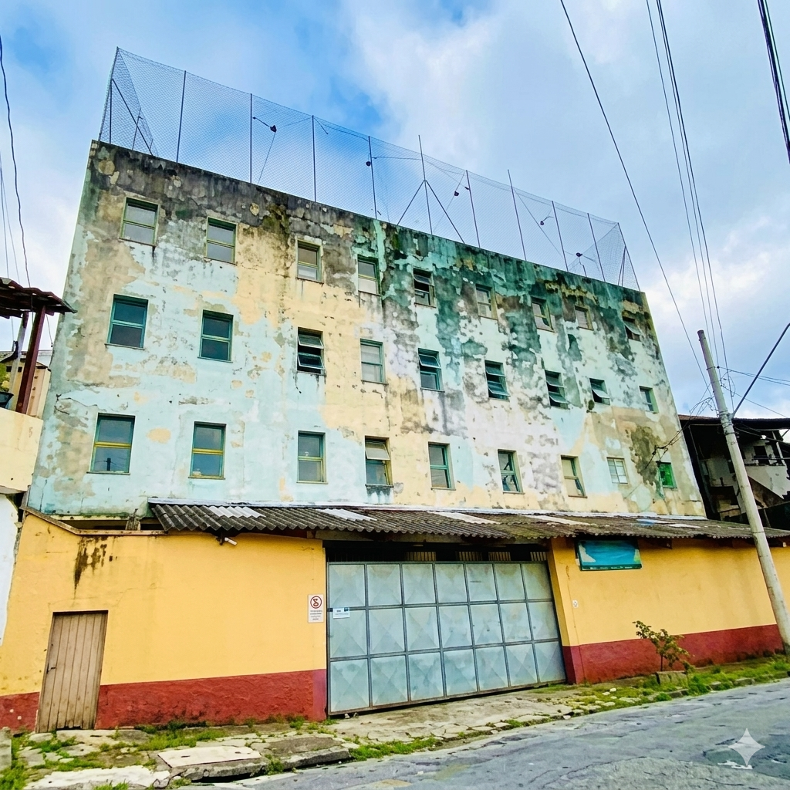

CEDESP
O CEDESP será um centro de capacitação profissional dedicado ao desenvolvimento social e produtivo de adolescentes e jovens a partir de 15 anos em situação de vulnerabilidade em São Paulo, com previsão de implantação em 2027.
Sobre o Programa
O CEDESP — Centro de Desenvolvimento Social e Produtivo — é um projeto estratégico do CACS em fase de desenvolvimento, com previsão de implantação em 2027. Reconhecendo que adolescentes e jovens a partir de 15 anos em situação de vulnerabilidade social enfrentam barreiras estruturais para acesso a capacitação profissional e oportunidades de empregabilidade, o CEDESP será um equipamento de referência dedicado ao desenvolvimento integral desse público.
Diferentemente de programas convencionais de capacitação, o CEDESP operará sob uma lógica de desenvolvimento social e produtivo integrado, combinando formação técnica, desenvolvimento de competências socioemocionais, orientação profissional e inserção no mercado de trabalho. O projeto visa atender até 120 adolescentes e jovens anualmente, oferecendo múltiplas trilhas de aprendizagem em áreas estratégicas como tecnologia, serviços, artesanato e economia criativa.
Alinhado aos princípios de inclusão social, empoderamento e transformação que fundamentam toda a atuação do CACS, o CEDESP representa um compromisso institucional de longo prazo com a construção de futuros dignos para a juventude vulnerável de São Paulo. Sua implementação será resultado de parcerias estratégicas, investimento em infraestrutura e mobilização comunitária.

PÚBLICO-ALVO
- Adolescentes a partir de 15 anos
- Sem limite de idade
- Em situação de vulnerabilidade social
- Residentes do Jardim Colombo e comunidades adjacentes em São Paulo
- Sem qualificação profissional prévia
- Com interesse em desenvolvimento profissional
- Encaminhados por escolas, CRAS, comunidade
- Jovens em risco social ou egressos do sistema de justiça juvenil
OBJETIVOS PRINCIPAIS
- Oferecer capacitação profissional de qualidade em múltiplas áreas estratégicas
- Desenvolver competências técnicas e socioemocionais para empregabilidade
- Promover autonomia, protagonismo e perspectivas de futuro para juventude vulnerável
- Facilitar inserção no mercado de trabalho através de parcerias com empresas
- Contribuir para redução de desigualdades sociais e econômicas
- Fortalecer vínculos familiares e comunitários
- Coordenar com rede pública para acompanhamento integral de beneficiários
SERVIÇOS OFERECIDOS (PREVISÃO 2027)
- Formação técnica em múltiplas áreas.
- Desenvolvimento de competências socioemocionais (comunicação, liderança, resolução de conflitos)
- Orientação profissional e de carreira
- Acompanhamento psicossocial integral
- Preparação para entrevistas e inserção no mercado de trabalho
- Parcerias com empresas para estágios e oportunidades de emprego
- Materiais didáticos e equipamentos fornecidos gratuitamente
LOCALIZAÇÃO (PREVISÃO 2027)
Localização: Região do Jardim Colombo/Vila Morse
Cidade: São Paulo/SP
Infraestrutura prevista:
• Salas de aula equipadas com tecnologia
• Laboratório de informática
• Oficinas para formação técnica
• Espaço para acompanhamento psicossocial
• Biblioteca e sala de estudos
• Acesso: Acessível para pessoas com mobilidade reduzida
HORÁRIOS DE FUNCIONAMENTO (PREVISÃO 2027)
Turmas: Manhã, tarde e noturno
Duração dos cursos: 3 a 12 meses
Frequência: 3 a 5 vezes por semana
Inscrição: PREVISÃO 2027
Telefone: (11) 3742-0516
E-mail: contato@cairbarschutel.org
CAPACIDADE E ATENDIMENTO (PREVISÃO 2027)
Jovens atendidos anualmente: 120+
Turmas simultâneas: 6-8 turmas
Alunos por turma: 15-20 jovens
Equipe: Instrutores qualificados + psicólogos
Supervisão: Técnica e pedagógica contínua
Materiais: 100% fornecidos gratuitamente
Transporte: Vans gratuitas para mobilidade
IMPACTO ESPERADO (2027 EM DIANTE)
120+
Alunos atendidos anualmente
6-8
Turmas simultâneas
15-20
Alunos por turma
MÚLTIPLAS TRILHAS DE APRENDIZAGEM
(Tecnologia, Serviços, Artesanato)
100% GRATUITO
(Materiais + Formação)
INSERÇÃO NO MERCADO DE TRABALHO
(Parcerias)
3-12 MESES
Duração dos cursos
CERTIFICAÇÃO
Profissional Reconhecida
ACOMPANHAMENTO PSICOSSOCIAL
Integral
FAQ (Perguntas Frequentes)
Quando o CEDESP será inaugurado?
A previsão de implantação é 2027. Estamos em fase de desenvolvimento, planejamento estratégico e mobilização de recursos. Acompanhe nossas atualizações para datas oficiais.
Qual é a idade mínima para participar?
O CEDESP atenderá adolescentes a partir de 15 anos e jovens até 29 anos em situação de vulnerabilidade social.
Qual é o custo do programa?
O programa será 100% gratuito. Materiais, equipamentos, formação e transporte serão fornecidos sem custo para os participantes.
Quais serão as áreas de capacitação?
O CEDESP oferecerá múltiplas trilhas de aprendizagem em: Tecnologia e programação, Serviços (hospitalidade, comércio), Artesanato e economia criativa, Sustentabilidade e economia circular.
Como será a inserção no mercado de trabalho?
O CEDESP operará com parcerias estratégicas com empresas para oferecer estágios, aprendizados e oportunidades de emprego direto para os beneficiários.
Como faço para me inscrever quando o CEDESP abrir?
Em breve, compartilharemos mais informações.
O programa oferecerá certificação?
Sim. Ao final de cada trilha de aprendizagem, os participantes receberão certificação profissional reconhecida no mercado.
Como posso apoiar a implementação do CEDESP?
Você pode apoiar através de: Doações financeiras, Parcerias empresariais, Voluntariado como instrutor ou mentor, Doação de equipamentos e materiais, Consultoria técnica.
O CEDESP terá horários noturnos?
Sim. O CEDESP funcionará em turnos manhã, tarde e noturno para atender diferentes realidades de horários dos jovens.
Qual é a diferença entre o CEDESP e outros programas de capacitação?
O CEDESP é um projeto integrado de desenvolvimento social e produtivo que combina formação técnica, desenvolvimento de competências socioemocionais, acompanhamento psicossocial e inserção no mercado de trabalho. É um compromisso institucional de longo prazo com transformação integral.